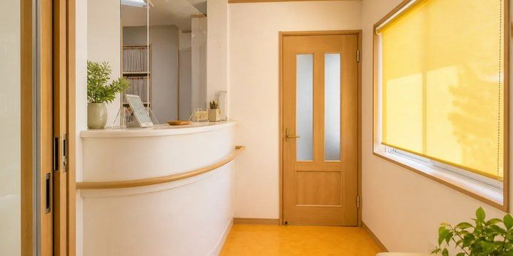
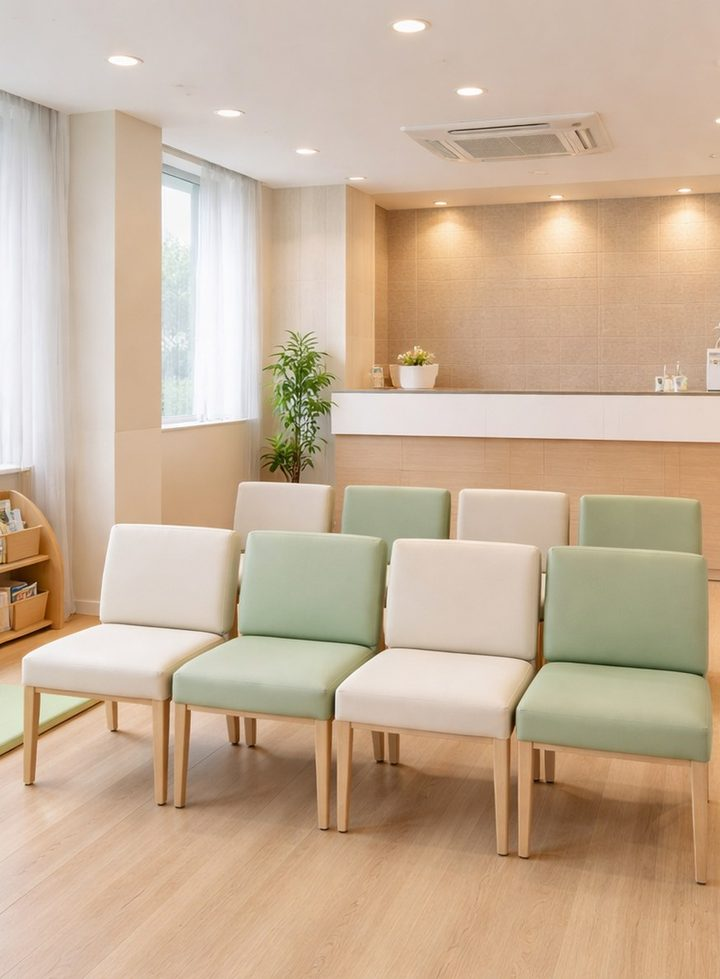
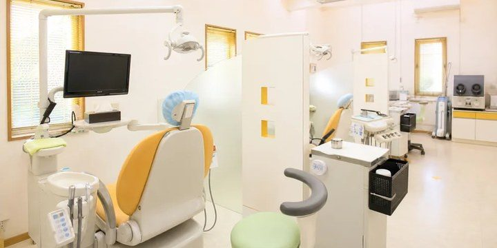
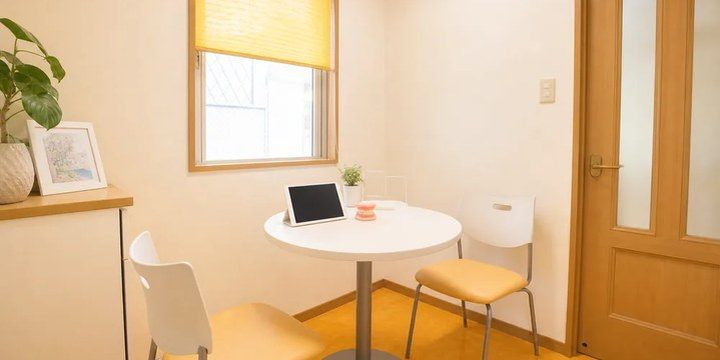

この資料の使い方 ── 撮影に行く前にざっと一読 → 当日はエリアごとに「角度の図」と「置く⇔片付ける」を見ながら撮る。
点線枠（📷）は「ここに雰囲気の見本写真を入れる」場所。生成プロンプトを併記してある。文字の詳細版は PHOTO_SHOTLIST.md。
0まず鉄則（これだけは守る）
① 明るく・自然光窓の光を活かす。暗い/青白いと安っぽい。曇りの日は実は好条件
② 撮影30分前の片付け配線・私物・ゴミ箱・書類を視界から消す。ここで8割決まる
③ 水平・垂直を出すスマホのグリッド線ON。建物や壁が傾くと素人臭くなる
④ 広め＋寄りの2枚同じ場所を全体1枚＋質感の寄り1枚。横位置が基本
⑤ 院長写真が最優先信頼装置No.1。一番気合いを入れる（→ 5章）
⑥ AI/イメージ写真は本番NG実在の院内・実物の院長を撮る（医療広告ルール→7章）
1光と時間帯 ── 8割はここで決まる
屋外（外観）は朝か午後の斜め光を狙う。真昼は避ける。室内は窓のサイド光を最優先。
ホワイトバランス：蛍光灯の青白さが出たら手動で「電球色」寄りに。この医院の暖色×木の世界観に合わせて、全体を少し暖かいトーンへ。窓の白飛びは露出補正 −0.5〜−1。
2共通の構図テクニック
○こうする
- グリッド線で水平・垂直を合わせる
- 正面より斜め45度で奥行きを出す
- 広め1枚＋寄り1枚をペアで
- 超広角は使わない（端が歪む）
×避ける
- 建物・壁が傾いている
- 真正面ばかりで平坦に見える
- 暗いまま/青白い蛍光灯トーン
- 患者・私物・配線が写り込む
3エリア別 ── 角度・光・小物
A2 外観
斜め30〜45度で立体感。看板・入口・建物全体が1枚に収まる距離・目線の高さ。
角度：斜め30〜45度の全景＋入口寄り＋看板寄り。
光：朝/午後の斜め光。順光だと看板が読みやすい。
× 片付ける
- 駐車車両・ゴミ箱・足場
- 電線・無関係な看板（角度でかわす）
📷雰囲気見本：外観イメージ（ここに生成写真を入れる → images/guide/sample-exterior.jpg）
生成プロンプト例：「日本の小さな歯科医院の外観、木目とアイボリーの暖かい外装、入口に観葉植物、晴れた朝の斜め光、斜め45度から、清潔で親しみやすい、実写風、看板は空欄」
※あくまで「雰囲気の参考」。本番サイトには実際の外観の実写を使う（医療広告ルール→7章）。
A3 受付
角度：入口から1.5〜2m奥・カウンターが中心。カメラ高さ100〜120cm（やや見下ろし）・正面〜斜め30度。
光：窓のサイド光が理想。蛍光灯のみなら電球色に補正＋ISO上げて顔が暗くならないように。
○ 置く・狙う
- カウンター上の観葉（30〜40cm）
- 整頓したパンフ立て・ロゴ小物
- スタッフ後ろ姿1〜2名で「迎える」温度
× 片付ける
- 書類・領収書
- PCモニタ裏の配線
- スタッフ私物（バッグ・携帯）
📷雰囲気見本：受付参考イメージ

この雰囲気を出す生成プロンプト
「歯科医院の明るい受付カウンター、木目の什器、アイボリーの壁、観葉植物、窓からの自然光、奥にスタッフの後ろ姿、清潔で温かい、実写風、人物の顔は写さない」
※雰囲気の参考。本番サイトには実際の受付の実写を使う。
A4 待合室
角度：入口寄りから奥への視線で奥行きを出す。カメラ高さ80〜120cm・広角気味（超広角は歪むので不可）。
光：窓の自然光最優先。レースカーテンで柔らかく。午前中が均一。
○ 置く・狙う
- 背の高い観葉（120〜180cm）で縦の抜け
- 新しめの雑誌を整頓
- 木のぬくもりが出る要素
× 片付ける
- 傘立て・私物・段ボール
- 消毒液ボトル・コート掛けの上着
注意：キッズスペースは無し（医院に存在しない）。キッズ要素を盛りすぎない（絵本1冊が置いてある程度なら可）。
📷雰囲気見本：待合室参考イメージ

この雰囲気を出す生成プロンプト
「歯科医院の静かな待合室、木製のベンチと布張りの椅子、大きな窓から差し込む柔らかい自然光、背の高い観葉植物、アイボリーと木目、無人、リラックスした暖かい雰囲気、実写風」
※雰囲気の参考。本番サイトには実際の待合室の実写を使う。
A5 診療室・デンタルチェア
平坦・冷たい病院的
奥行き・清潔感が出る
角度：斜め45度・座面と同じ高さ（60〜80cm）から。見上げは威圧的でNG。
光：窓のサイド光＋無影灯。清潔感は昼白色寄り、でも全体は暖かさを残す。
○ 置く・狙う
- 清潔なクッション
- 少しだけ整頓したトレー
- 拭いて光る無影灯
× 片付ける
- 吸引チューブ・床に垂れた配線
- ゴミ箱・紙コップ
- 黒いモニタ画面/映り込み
📷雰囲気見本：診療室参考イメージ

この雰囲気を出す生成プロンプト
「歯科の診療室、デンタルチェア1台を斜め45度から、無影灯、明るく清潔、窓からの自然光、暖色の壁、器具は整頓、配線は見えない、実写風、無人」
※雰囲気の参考。本番サイトには実際の診療室の実写を使う。
A6 カウンセリングルーム（個室） ★「通院をためらう方へ」で重要
角度：机と椅子が斜め（L字/90度配置）に見える位置。ガチ正対は"取り調べ"感が出るので避ける。カメラ高さ100〜120cm（座った目線）。
光：電球色でリラックス。蛍光灯の青白さを最も避けたいエリア。レース越しの自然光が理想。
○ 置く・狙う
- 歯の模型・整頓したパンフ立て
- 木製デスク・背後コーナーの観葉
- スタンドライト（電球色）
📷雰囲気見本：個室参考イメージ

この雰囲気を出す生成プロンプト
「歯科医院の小さなカウンセリング個室、木製デスクを挟んで椅子がL字配置、電球色の暖かい間接照明、歯の模型とパンフレット、観葉植物、落ち着いた安心感、実写風、無人」
※雰囲気の参考。本番サイトには実際の個室の実写を使う。
B1 設備（レントゲン/CT/滅菌器）
角度：斜め45度・カメラ低め（60〜80cm）で機器の威圧感を下げる。天井は入れない。
○ 置く・狙う
- 説明パンフ・機器名が読めるカット
- 隣に観葉で冷たさを緩和
× 片付ける
- 散乱した手袋・マスク
- 使用済み防護具・床を横切る配線
4院長ポートレート ── 信頼装置No.1
トップ・院長紹介・通院をためらう方へ の3ページで同一画像を使用。狙いは「優しくて信頼できる近所の先生」。
体は15〜30度斜め・顔はほぼ正面・カメラ目線。バストアップ縦が主軸。
表情：口角をやや上げた自然な微笑み。歯は見せないか1〜2本程度。目は柔らかく（見開きすぎない）。真顔＝怖い、大笑い＝素人写真。
服装：白衣（真っ白・襟ピン・アイロンでしわ消し）。ノーネクタイで可。爪は短く清潔（手元が写る歯科は特に）。
背景：院内（受付前 or 木目）で医院の体温を。軽くボカす。
光：顔に影を作らない（窓＋顔の下に白い布でレフ）。目にキャッチライト。おでこ・鼻のテカリはパウダーで。
撮り分け（1回の撮影で）：① 親しみ版（明るい微笑み・カメラ目線）→ トップ・不安な方へ ② 真面目版（落ち着いた微笑み・やや目線外し）→ 院長紹介・経歴。各3〜5枚、気に入った数枚を補正へ。
📷雰囲気見本：院長ポートレート構図（→ images/guide/sample-portrait.jpg）
生成プロンプト例：「日本人の優しい歯科医院長、40代、白衣、柔らかい微笑み、カメラ目線、体は軽く斜め、木目の院内を背景に軽くボケ、窓からの自然光、目にキャッチライト、清潔で親しみやすい、実写風バストアップ縦構図」
※構図・雰囲気の参考用。本番は実物の院長を撮影（AI生成の顔は本番サイトでは使わない）。
5スタッフ写真（任意・同意が前提）
院長が中央。身長差は前列を椅子/踏み台で吸収。
顔出しは本人の書面同意が必須（退職時にサイトから消す運用も決める）。後ろ姿のみなら同意ハードルも緊張も低い。
白衣の色・丈を統一。撮影直前に全員しわ・ほこりチェック。
緊張ほぐし：合図（「せーの」）を決める／本番前に1〜2枚練習撮り／直前に一言笑わせる。
6レタッチ（補正）どこまでOK？
原則＝「撮影環境の補正はOK／事実を変える加工はNG」。院長写真は「初診で会った時に"写真と違う"と思われない」範囲（実物より5%増しまで）。
| 対象 | ○ OK（環境の補正） | × NG（事実の改変） |
|---|
| 院長・スタッフ |
明るさ・色温度・コントラスト／テカリ抑え／後れ毛・ほこり除去／瞳のキャッチライト軽い補強／毛穴・小シミをごく軽く |
別人化する美肌／顔の輪郭・目の変形／10歳以上の若返り／歯を不自然に白く／体型補正 |
| 院内・外観・設備 |
明るさ・色温度・トリミング／背景のゴミ・キズ消し |
実在しない設備の合成／背景の大幅変更／散らかりを"無かったこと"にする捏造 |
7掲載してよい範囲（医療広告ルール）
Webサイトは医療広告ガイドライン（厚労省）の規制対象。判定軸は「患者を誤認させるか」。
○載せてOK
- 院長・スタッフ・院内・外観・設備の実写（事実情報）
- 条件：実在する物だけ・他院/素材の流用なし・スタッフ肖像権同意
×このサイトは載せない方針
- ビフォーアフター・患者の声・症例写真（既定方針）
- 実在しない院内を本物に見せるAI/イメージ写真
AI/イメージの扱い：現状の仮画像（AIプレビュー）は本番で使い続けない＝実写へ差し替えが前提。
この資料の📷枠は「撮影前の雰囲気参考（教材）」であり、サイト掲載用ではない。
将来どうしてもイメージ写真を使う箇所は「※イメージ」を読める大きさで明記し、実在しない設備を「ある」と誤認させない。
8撮影当日の段取り（約90分・開院前推奨）
準備 15分
小物配置・片付け、機材充電、グリッドON、ホワイトバランス確認
外観 20分
朝/午後の斜め光。正面・左右斜め・入口寄り・看板寄り
診療室 15分
チェア斜め45度を数枚＋全体引き＋ライト寄り
個室 10分
机椅子の配置1＋机上パンフ寄り1（電球色で）
院長ポートレート（別枠で気合い）
親しみ版・真面目版で各3〜5枚（→ 4章）
撮影後：全データをバックアップ → 患者/個人情報の映り込みを最終確認 → Web用に圧縮 → IMAGE_TODO.md の各 src を差し替え。